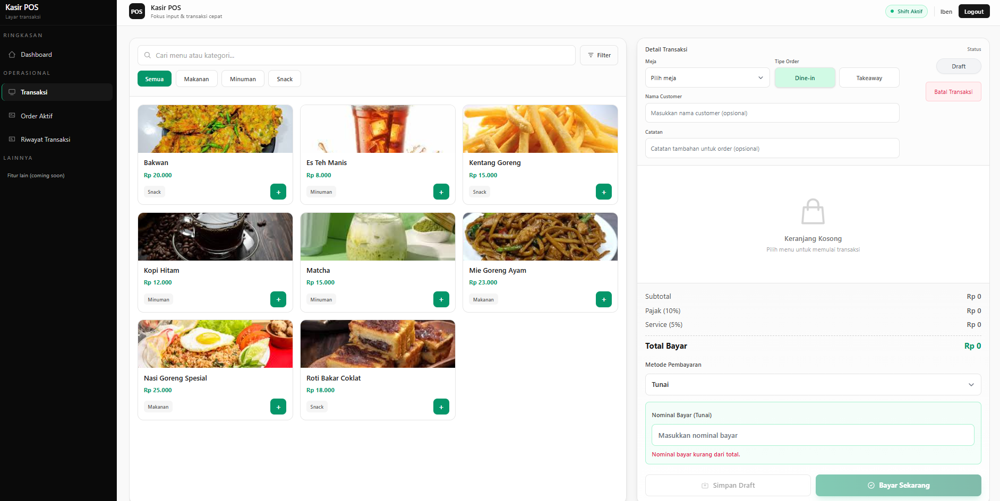

Featured Fullstack Laravel Project
POS System
2024 · Backend & Fullstack Laravel
Aplikasi Point of Sale (POS) berbasis web yang saya bangun untuk membantu operasional kafe berjalan lebih tertata: dari pencatatan pesanan, pengelolaan menu dan meja, hingga proses pembayaran dan pengaturan hak akses pengguna.
Laravel
MySQL
Livewire
Tailwind CSS

Project overview
POS Kafe dirancang sebagai satu aplikasi terpusat untuk kasir, dapur, dan admin. Fokusnya adalah membuat alur transaksi di kafe kecil hingga menengah terasa cepat, minim salah hitung, dan mudah dipantau.
- Kasir memproses pesanan dine-in maupun take-away dengan alur yang jelas.
- Pemilik kafe melihat ringkasan penjualan harian tanpa perlu export manual.
- Dapur menerima pesanan terstruktur lengkap dengan catatan khusus pelanggan.
- Admin mengatur menu, meja, dan metode pembayaran dari satu dashboard.
Fitur utama
Modul Kasir
- Dashboard kasir untuk melihat status meja dan ringkasan transaksi hari ini.
- Layar POS yang ringan: pilih tipe order, meja, dan menu dalam beberapa langkah.
- Total, pajak, dan service charge dihitung otomatis tanpa hitung manual.
- Order bisa disimpan sebagai draft atau langsung diselesaikan pembayarannya.
- Dukungan split bill agar pelanggan yang bayar terpisah tetap tercatat rapi.
Modul Dapur (KDS)
- Tampilan dapur yang mengelompokkan pesanan per meja atau invoice.
- Status setiap item jelas: menunggu, dimasak, siap, atau sudah diantar.
- Koki mengubah status langsung dari layar tanpa perlu tiket kertas.
- Daftar pesanan diperbarui otomatis sehingga dapur melihat data terbaru.
- Catatan seperti tingkat pedas atau permintaan khusus tercatat di setiap item.
Modul Admin
- Dashboard ringkas untuk memantau performa penjualan per periode.
- Pengelolaan menu, kategori, meja, dan metode pembayaran dalam satu halaman.
- Pengaturan akun dan hak akses untuk kasir, dapur, dan admin.
- Riwayat transaksi yang bisa difilter untuk kebutuhan rekapan dan laporan.
Karakteristik teknis
- State POS tetap aman saat halaman di-refresh sehingga konteks order tidak hilang.
- Logika bisnis dipisah ke service layer agar struktur kode tetap bersih.
- Pengalaman penggunaan mendekati SPA berkat Livewire, tanpa framework frontend tambahan.